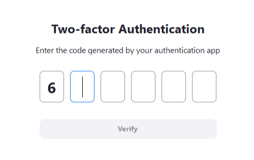
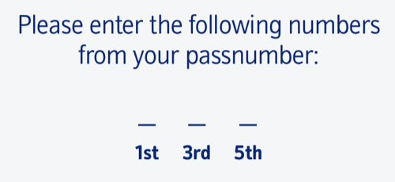

All technologies that require authentication.
Requiring users to authenticate by entering a password or code in a different format from which it was originally created is a failure to meet Success Criteria 3.3.8 Accessible Authentication (Minimum) and 3.3.9 Accessible Authentication (Enhanced) (unless alternative authentication methods are available). The string to be entered could include a password, verification code, or any string of characters the user has to remember or record to authenticate.


If a user is required to enter individual characters across multiple fields in a way that prevents pasting the password in a single action, it prevents use of a password manager or pasting from local copy of the password. This means users cannot avoid transcription, resulting in a cognitive function test. This applies irrespective of whether users are required to enter all characters in the string, or just a subset.
These examples would prevent a user from entering a password or code in the same format in which it was originally created:
<select> elements that requires a user to select each character of a fixed-length password from individual dropdown fields.For each form field which accepts password or code entry: